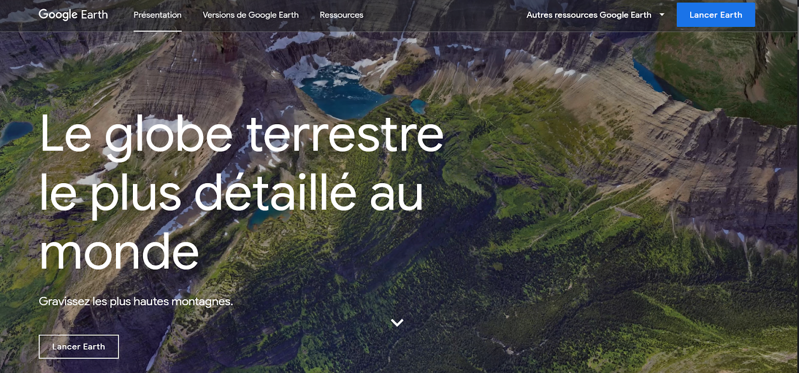
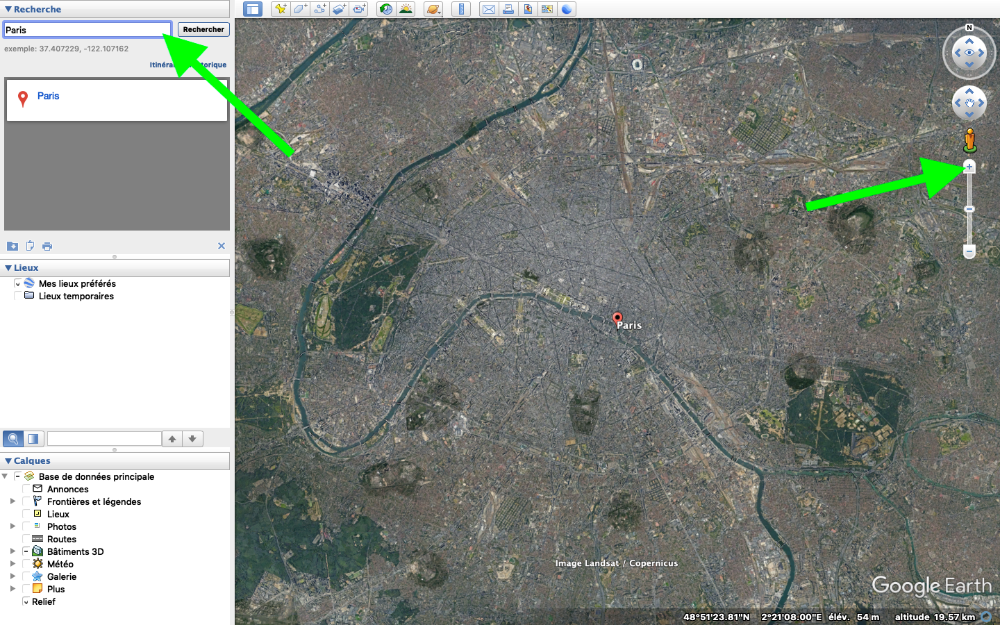

Les plateformes
I. Présentation de quelques plateformes :
C’est la plateforme la plus connue, où l’on peut sans forcément le savoir utiliser la télédétection. Google earth est une plateforme où l’on peut visualiser grâce à des images satellites le monde entier. En effet, nous avons la possibilité de voir des images satellites à différentes échelles ! On peut donc avoir une vision globale de la terre mais aussi une vision très proche et observer une rue, une maison, un parc, etc. A toi de t’amuser avec google earth dans la partie exercice !
Le lien pour y accéder : https://www.google.com/intl/fr/earth/
Google Earth, à quoi ça sert ?
AIRBUS c'est quoi ?
C’est une plateforme Américaine qui a pour objectif de permettre “un accès exclusif à la plus grande constellation de satellites commerciaux” en combinant différents types de satellites ayant des caractéristiques techniques différentes. Airbus souhaite se positionner en première place de fournisseur “d'intelligence perspicace et exploitable” lors d’un projet à réaliser par des acteurs divers.
Le lien pour y accéder :
https://www.intelligence-airbusds.com/about-us/our-focus/
PEP'S c'est quoi ?
PEP'S, c'est quoi ?
Le lien pour y accéder : https://dinamis.data-terra.org/
Le pôle théia et les centres d'expertise scientifiques associés c’est quoi?
C’est une plateforme regroupant 9 institutions publiques françaises impliquées dans l’observation de la terre et les suivis de l’environnement. Le but de cette plateforme est de faciliter l’usage des images issues de l’observation des surfaces continentales depuis l’espace. Ces images sont donc à la disposition de la communauté scientifique nationale, internationale et des pouvoirs publics.
Le lien pour y accéder :
https://www.theia-land.fr/pole-t
Le Crige c'est quoi ?
C’est une base de données régionale d’occupation des sols en l'occurrence de la région Provence Alpes Côtes d’Azur. Ce site a été réalisé à partir d’une nomenclature régionale (découpage d’un territoire).
Le lien pour y accéder :
https://www.crige-paca.org/
II. Exercices pratiques :
Après la théorie, voilà la pratique ! Alors voici queslques exercices pour tester tes qualités en tant que maître de la télédétection !
Capter l'image d'un lieu où on est déjà allé.
Google Earth
Capter l'image d'un lieu où l'on souhaite aller.
Airbus
Dans cet exercice, nous allons voir comment la télédétection est utile à l’observation du changement climatique.En effet, nous avons vu que la télédétection nous permettait d’observer de nombreuses caractéristiques physiques et biologiques de la terre. À travers cet exercice nous allons oberver la fonte des glaces du Mont-Blanc et plus particulièrement dans la région de Chamonix en France.
created with
HTML Editor Free .